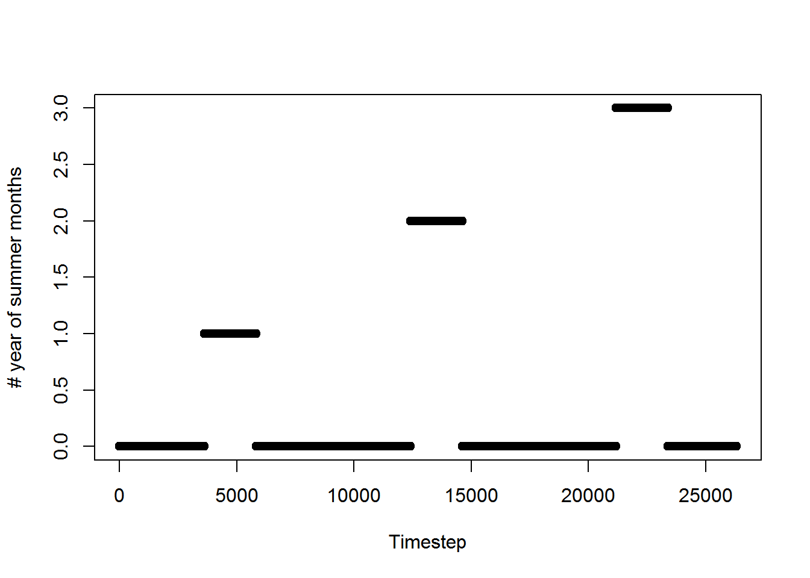

4 Code
This function defines the data cooking functions.
4.1 get_cos_data_example
visCOS provides some exemplary data. All the available functions can be tested with it. get_cos_data_example is a small wrapper function to get the data from within the package via read.csv
Note at this stage, only a comparison between numbered catchments is possible for two parameters is possible. So the data must include an integer number after the description (like “QObs_001” and “QSim_001”)
#' Get runoff example
#'
#' Get exemplary runoff data to test the different functions of visCOS
#' @export
get_cos_data_example <- function() {
file_path <- system.file("extdata",
"runoff_example.csv",
package = "visCOS")
runoff_example <- read.csv(file_path)
return(runoff_example)
}4.2 remove_junk
This function removes all columns not specified in the viscos_options, as well basins where no data_o is available. Note that the routine is not case sensitive. It does not distinguish between small and capital letters!
The first part of the code loads the dependencies and makes sure that the cos_data variable is a data.frame (see: chapter about defensive coding).
The body of remove_junk works as following: First, the names of the columns of the cos_data are determined and helper function get_regex_for_cos_data is invoked to get regular expressions for the columns defined within viscos_otopns. Then the idx of the different wanted data is extracted and used to select the appropriate columns.
Afterwards, the “sub” function only_observed_basins is being executed (see next chapter)
#' removes junk in cos_data
#'
#' Removes all columns which are not foreseen (see: viscos_options) from
#' runoff data
#'
#' @import magrittr
#' @param cos_data The cos_data data.frame (see vignette for info)
#' @return data.frame object without the chunk
#' @export
remove_junk <- function(cos_data) {
assert_dataframe(cos_data)
#
names_in_data <- cos_data %>% names
regex_columns <- get_regex_for_cos_data() # see: helpers
#
idx <- regex_columns %>%
grep(.,names_in_data, ignore.case = TRUE)
no_junk_cos_data <- cos_data[ , idx]
return( only_observed_basins(no_junk_cos_data) )
}4.2.1 only_observed_basins
This function removes basins for which no data in the o_data column. No observation are columns where all the entries are either as defined in viscos_options("missing_data") or NA's. At the end of the function the former are transformed into NA's.
# remove basins without observations
#
# Removes basins without observation (-999/NA values) from the provided data.frame
#
# @param cos_data A raw cos_data data.frame, which may contains basins
# without observations.
# \strong{Note:} It is assumed that all available basins are simulated!
# @return data.frame without the observation-free basins
#
# @import magrittr
# @import pasta
only_observed_basins <- function(cos_data) {
require("magrittr")
require("pasta")
assert_dataframe(cos_data)
# set NA values to viscos_options("missing_data") and check if there are
# cloumns wihtouth observervation
chosen_cols <- which( names(cos_data) != viscos_options("name_COSposix") )
rows_with_na <- is.na(cos_data[,chosen_cols])
data_wihtouth_posix <- cos_data[ ,chosen_cols]
data_wihtouth_posix[rows_with_na] <- viscos_options("missing_data")
colmax <- sapply(X = data_wihtouth_posix, FUN = max)
#
# if there are columns withouth observations remove them from the data:
if ( any(colmax < 0.0) ){
name_o <- viscos_options("name_o")
neg_obs_names <- which(colmax < 0.0) %>%
names %>%
grepl(name_o %.% "*",.,ignore.case = TRUE) %>%
idx_temp[.]
neg_s_names <- gsub(name_o,viscos_options("name_s"),neg_obs_names,ignore.case = TRUE )
data_selection <- neg_obs_names %|% neg_s_names %>%
grepl(., names(cos_data), ignore.case = TRUE) %>%
not(.)
data_only_observed <- cos_data[ ,data_selection]
} else {
data_only_observed <- cos_data
}
# set all missing data values to NA for use in hydroGOF
idx_NA <- data_only_observed %>%
equals(viscos_options("missing_data"))
data_only_observed[idx_NA] <- NA
return(data_only_observed)
}4.3 complete_dates
This function is not finished yet! Within cos_data data.frame (see: introduction) the date has to be defined in two formats: With 5 columns, where the columns are year-month-day-hour-minute and names as defined in viscos_options() and with one column in POSIXct format (see: link), that is named as defined in viscos_options("name_COSposix"). The idea of the complete_dates fucntion is to provide a internal posibility to create the one format out of the ohter and thus complete the dates.
However, currently it is only possible to convert the 5-columns representation into POSIXct dates via the internally defined implode_cosdate function.
Also by using UTC a fixed time-zone is assumed within visCOS to avoid problems with leaps in time (summer/winter time).
#' Complete the date-formats with POSIXct or COSdate
#'
#' Complete the data-formats of your data.frame `POSIXct` and/or `COSdate`
#'
#' @param cos_data The data.frame, which contains the runoff information
#' @param name_cosyear string with the name of the `COSdate` year column
#' @param name_posix string with the name of the POSIXct column
#' @return The new runoff data.frame with the added data-format.
#'
#' @import magrittr
#'
#' @export
complete_dates <- function(cos_data) {
# make sure that magrittr is loaded:
assert_dataframe(cos_data)
# check for COSdates and stop if non-logical expression are obtained
OK_COSdate <- any(
unlist(viscos_options("name_COSyear",
"name_COSmonth",
"name_COSmonth",
"name_COShour",
"name_COSmin")
)
%in%
names(cos_data)
)
OK_POSIXdates <- any(names(cos_data) == viscos_options("name_COSposix"))
if ( !is.logical(OK_COSdate) | !is.logical(OK_POSIXdates) ) {
stop("Something is wrong :( \n
some of the date-columns could not be processed!")
}
# choose function depending on which formats are available!
if (!OK_COSdate & !OK_POSIXdates) {
stop("Something is wrong :( \n
The 5 cosero date columns and the POSIXct colum could not be found")
} else if (OK_COSdate & !OK_POSIXdates) {
cos_data <- implode_cosdate(cos_data) # see following chapter
} else if (!OK_COSdate & OK_POSIXdates) {
stop("POSIXct to COSdates not yet supported :(")
}
return(cos_data)
}4.3.1 implode_cosdate
This function is used to transform the “old-school” 5 column format into the widely spread POSIXct format. The function is not exported and should only be called from within complete_date()!. Also, thanks to Christoph Schürz for his help with conception.
implode_cosdate <- function(cos_data) {
require("magrittr", quietly = TRUE)
assert_dataframe(cos_data)
name_string <- cos_data %>% names %>% tolower
#
POSIXdate <- paste(cos_data[[viscos_options("name_COSyear")]],
sprintf("%02d",cos_data[[viscos_options("name_COSmonth")]]),
sprintf("%02d",cos_data[[viscos_options("name_COSday")]]),
sprintf("%02d",cos_data[[viscos_options("name_COShour")]]),
sprintf("%02d",cos_data[[viscos_options("name_COSmin")]]),
sep= "" ) %>%
as.POSIXct(format = "%Y%m%d%H%M", origin = .[1], scale = "hourly", tz = "UTC")
cos_data[[viscos_options("name_COSposix")]] <- POSIXdate
return(cos_data)
}4.4 remove_leading_zeros
This internal function removes leading zeros from column names of the cos_data data.frame. The function has no defensive code but uses remove_junk (see: above). It should therefore be used with care!
Sad Note: The current solution is bit suboptimal as many operations are needed and different tricks are used (e.g. as.numeric %>% as.character) to obtain the wanted result. We hope that better solutions can be found in the future.
# remove leading zeros from the names of cos_data (data.frame)
remove_leading_zeros <- function(cos_data) {
require("magrittr", quietly = TRUE)
cos_data %<>% remove_junk
#
runoff_names <- cos_data %>% names
runoff_lowercase_names <- runoff_names %>% tolower
#
separator <- runoff_lowercase_names %>%
extract( grep(viscos_options()$name_o,.) ) %>%
extract( 1 ) %>%
gsub(viscos_options()$name_o,"",.) %>%
gsub("\\d","",.)
searchterm <- paste0(viscos_options()$name_o,"|", viscos_options()$name_s)
runoff_nums <- runoff_lowercase_names %>%
gsub(searchterm,"",.) %>%
gsub(separator,"",.) %>%
gsub("\\D","",.)
searchterm <- paste(runoff_nums, collapse = "")
runoff_only_names <- runoff_names %>%
gsub(paste0("[",searchterm,"]"),"",.) %>%
gsub(separator,"",.)
runoff_new_numbers <- runoff_nums %>%
as.numeric() %>%
as.character()
runoff_new_numbers[is.na(runoff_new_numbers)] <- ""
#
names(cos_data) <- runoff_new_numbers %>%
gsub("\\d+",separator,.) %>%
paste0(runoff_only_names,.,runoff_new_numbers)
return(cos_data)
}4.5 mark_periods
This function can be used to create a viscos_options("name_COSperiod"). The period column is a vector of increasing integer that is set to 0 for rows that are out of the period.
The current solution for defining this columns is not realy satisfying, but the problem seems to be non-trival… Life is short and it was the best that the authors could come out with so far.
In its current iteration the function takes cos_data and the two integers start_month and end_month as inputs, that can be used to define the to-be marked periods. The function can be directly used on raw data since the remove_junk and complete_dates are internaly applied to. This does however also mean that it needs to be used with care!
The computation is done in the following way: (I) Before starting the acutal marking the variable period_range and the out_of_period vector is defined. (II) With the help of the vectors the periods can be marked in two steps:
- First, all the starting months within cos_data are marked and the cumulative sum is used to count the periods within the data.frame. At the beginning of the first period, the counter is at “1” and becomes “2” with the beginning of the second period and so on.
- Secondly, the
out_of_periodof all years is set back to zero again by checking which months of the data are equal to theout_of_periodentries.
There are at least two apparent problems with that solution:
- One problem is that the last year is not extracted properly if
start_month>end_month. To compensate this problem thedplyrshenanigans are added at the end of the fucntion. - The other problem is that that the first and last period are also included in the solution even if they are not complete!
#' calculate periods
#'
#' Mark the periods within cos_data.
# The marking uses a monthly resolution, which are defined by the integers
#' `start_month` and `end_month`.
#'
#' @param cos_data The data.frame, which contains the runoff information
#' @return The runoff data.frame reduced and ordered according to the
#' hydrological years within the data.
#' \strong{Note:} The periods columns are formatted as characters!
#'
#' @import dplyr
#' @import magrittr
#'
#' @export
mark_periods <- function(cos_data, start_month = 10, end_month = 9) {
assert_dataframe(cos_data)
cos_data %<>% remove_junk %>% complete_dates()
# (I) get labels for the months
if (start_month <= end_month ) {
period_range <- seq(start_month,end_month)
out_of_period <- seq(1,12) %>% extract( !(seq(1,12) %in% period_range) )
} else if (start_month > end_month) {
range_1 <- seq(start_month,12)
range_2 <- seq(1,end_month)
period_range <- c(range_1,range_2)
out_of_period <- seq(1,12) %>% extract( !(seq(1,12) %in% period_range) )
}
# (II) mark periods:
eval_diff <- function(a) {c(a[1],diff(a))}
cos_data[[viscos_options("name_COSperiod")]] <-
cos_data[[viscos_options("name_COSmonth")]] %in% c(start_month) %>%
eval_diff %>%
pmax(.,0) %>%
cumsum
cos_data$period[cos_data[[viscos_options("name_COSmonth")]] %in% out_of_period] <- 0
# corrections for last year
max_year <- max(cos_data[[viscos_options("name_COSyear")]])
cos_data %<>% dplyr::mutate(
period = ifelse(
( (.[[viscos_options("name_COSyear")]] == max_year) &
(.[[viscos_options("name_COSmonth")]] > end_month) ),
0,
period
)
)
return(cos_data)
}Here are two additonal examples that display the slected periods and the numbering:
require(magrittr)
require(visCOS)
# mark_periods example 1: Hydrological years (September till August)
# note that the last year is not complete, so the counter jumps back to 0
ex1 <- get_cos_data_example() %>% mark_periods(.,start_month = 9, end_month = 8)
plot(ex1$period, xlab="Timestep", ylab = "# of hydrological year")
# mark_periods example 2: Summer Months (June till August)
ex2 <- get_cos_data_example() %>% mark_periods(.,start_month = 6, end_month = 8)
plot(ex2$period, xlab="Timestep", ylab = "# year of summer months")
4.6 cos_data_as_xts
This function is actually just a small wrapper around the xts::xts function for the purposes of visCOS.
A notable quirk of the function is that the names of the header are put to lower cases via the tolower function and possible leading zeros in the enumeration of the basins are removed.
Currently it is not exported as users can use xts themselves perfectly well, and it is felt that the function does not provide enough added value for the user.
#' Convert cos_data to xts-format
#'
#' Converts the cos_data (class: data_frame) into an xts object
#'
#' @param cos_data data_frame of the cos_data (see: xxx)
#' @return xts object of the cos_data data.frame
#'
#' @import zoo
#' @importFrom xts xts
#' @import magrittr
cos_data_as_xts <- function(cos_data) {
# pre
assert_dataframe(cos_data)
assert_junk(cos_data)
assert_complete_date(cos_data)
# everything is set to lower case
cos_data <- remove_leading_zeros(cos_data) %>%
magrittr::set_names(names(cos_data) %>% tolower)
name_posix <- viscos_options("name_COSposix") %>% tolower
cos_data_as_xts <- xts(x = cos_data[], # ,names(cos_data) != name_posix
order.by = cos_data[[name_posix]])
#
return(cos_data_as_xts)
}